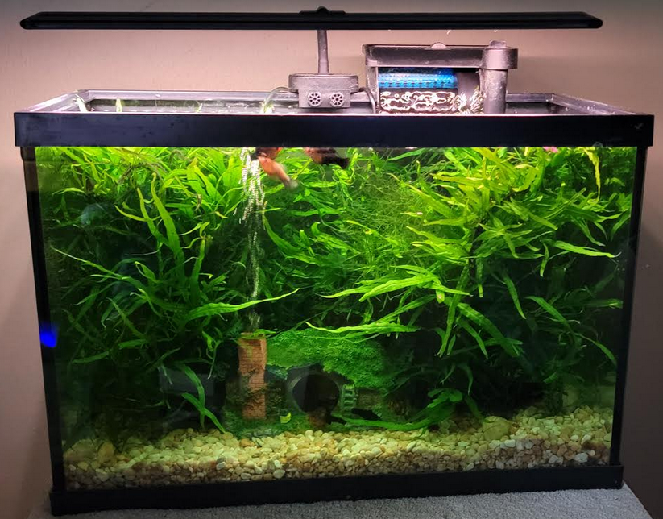

Fresh or salt water, it doesn't matter to me. I run a family club called "The Virginia Fishing Initiative.
I love music! I love the guitar work done in the 50-70's, real bluesy. I play the guitar, mandolin, and harmonica. when I'm not working or fishing I'm usually playing1
My gaming tastes have changed over the years. First person shooters have said "bye Bye" to me. I do enjoy games like Solastra, Baulder's Gate (any of them), World of Warcreft, etc.
I built saltwater aquriums for about 15 years. I loved them. I had to give them up because I didn't have the time to propperly care for them. I recently started back with planted aquariums. Se the picture below and let me know what you think.
